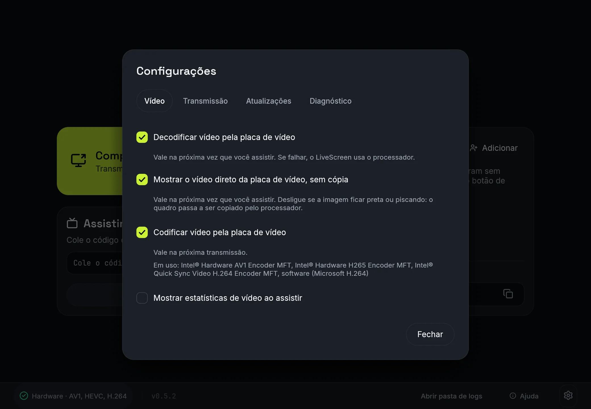

Ajuda
Tudo o que não coube na página inicial.
Requisitos
- Host (quem transmite): Windows 10 versão 2004 ou superior, 64 bits.
- Viewer (quem assiste): Windows 10 2004+ x64 ou Android 8.0 (API 26) ou superior. O Android não transmite.
Versões
O host 0.5 só aceita viewers 0.5 (protocolo 5). Viewers 0.5.x conectam também a hosts 0.4 (protocolo 4), mas versões com protocolos incompatíveis recusam a conexão com “versão incompatível”.
| Quem transmite | Quem assiste | Conecta? |
|---|---|---|
0.5 |
0.5 (desktop ou Android) |
Sim |
0.4 |
0.5 (desktop ou Android) |
Sim, com convite sem chave de sala |
0.5 |
0.4 |
Não: “versão incompatível” |
Download e atualização
Baixe o livescreen.exe (ou o .zip) em Releases. Não precisa instalar: é só abrir.
Ao abrir, o app verifica se há versão nova. Se houver, aparece o botão Atualizar para a versão X no rodapé da tela inicial. Ele:
- baixa o
livescreen.exeda release; - confere o sha256 publicado pelo GitHub;
- troca o executável e reabre o app.
Para atualizar, o executável precisa estar numa pasta com permissão de escrita (fora de Program Files, por exemplo).
Configurações
Abra pela engrenagem em qualquer tela ou com Ctrl+,. Tudo fica em ui.json.

Vídeo
-
Decodificar vídeo pela placa de vídeo
Vale na próxima vez que você assistir. Se falhar, o LiveScreen usa o processador.
-
Mostrar o vídeo direto da placa de vídeo, sem cópia
Vale na próxima vez que você assistir. Desligue se a imagem ficar preta ou piscando: o quadro passa a ser copiado pelo processador.
-
Codificar vídeo pela placa de vídeo
Vale na próxima transmissão.
- Mostrar estatísticas de vídeo ao assistir
Transmissão
- Qualidade padrão
- Transmitir áudio
- Transmitir microfone
-
Baixar a qualidade sozinho quando o PC não der conta
Vale na hora, inclusive com a transmissão no ar. Só reduz; para subir, escolha a qualidade.
-
Aceitar pedidos de qualidade mais leve de quem assiste
Desligado, os pedidos só aparecem como aviso.
- Limite da sala
-
Seu nome
Como você aparece para quem compartilha
-
A qualidade e o áudio também mudam quando você escolhe ao iniciar uma transmissão.
Atualizações
-
Procurar atualizações ao abrir o LiveScreen
Versão instalada
Diagnóstico
- Abrir pasta de logs
- Usar Windows Graphics Capture (necessário para compartilhar janelas)
-
Usar Desktop Duplication (DXGI) como alternativa para telas
Vale na próxima transmissão.
Qualidade pelo espectador
Quem assiste pode pedir ao host uma qualidade mais leve (menu “Qualidade”), inclusive as faixas 240p 30, 360p 30 e 480p 15 (hosts mais antigos, que não conhecem essas faixas, recebem 480p 30). O host só aplica se o stream de fato ficar mais leve (largura, altura, fps e bitrate não sobem), no máximo um pedido a cada 5 s, e vale para a sala toda. O host pode desligar os pedidos em Configurações (“Aceitar pedidos de qualidade mais leve de quem assiste”); desligado, eles só aparecem como aviso.
Android (só para assistir)
O app Android só assiste: cole o código de convite e toque em Assistir. Ele conecta a hosts 0.5 e também a hosts 0.4 (convite sem chave de sala).
- Bateria: com o app em segundo plano o áudio pausa e, em hosts 0.5, o host para de enviar vídeo; tudo volta ao reabrir, sem reconectar. Hosts 0.4 não entendem esse pedido e continuam enviando vídeo. Mudo também pausa a decodificação do áudio.
- Atualização: o app confere a release pelo GitHub e baixa o APK novo.
Arquivos em %APPDATA%\LiveScreen\ e config.json
ui.json: preferências (qualidade, áudio, nome, volume, limite da sala, posição da janela, decodificação/codificação por hardware, estatísticas, tema, atualização, backends de captura).livescreen.log: registro para diagnóstico.-
config.json(opcional): desliga partes da captura ou do encoder para contornar problemas de driver:{ "capture_overrides": ["deny-hardware-encoder"] }Valores aceitos:
deny-graphics-capturedeny-dxgideny-hardware-encoderdeny-hardware-decoderdeny-zero-copy(o viewer volta a ler o quadro pela CPU em vez de compartilhar a textura com a placa de vídeo; o overlay de estatísticas mostrasem cópiaoucópia via CPU)
A variável de ambiente
LIVESCREEN_CAPTURE_OVERRIDES(valores separados por vírgula) substitui o arquivo. O que o arquivo ou a variável desligam não pode ser religado em Configurações. A janela usa o backend DX12 do wgpu;WGPU_BACKENDtroca o backend e, fora do DX12, o viewer usa a cópia via CPU.
Diagnóstico pela linha de comando
O .exe é um app de janela: para ver a saída, redirecione, ex.: livescreen.exe --probe-encoder | Out-String no PowerShell ou | more no cmd.
-
livescreen.exe --probe-encoderTesta os encoders de placa e imprime o que funcionou.
-
livescreen.exe --selftest-captureCaptura a tela principal por 3 s com cada backend e conta os quadros.
Solução de problemas
Aparece Via servidor e o vídeo trava
O servidor de retransmissão padrão é a infraestrutura pública e gratuita da n0 (equipe do iroh), compartilhada com outros apps e com limite de taxa. Quando alguém aparece como Via servidor, qualidades altas podem travar: baixe a qualidade da transmissão ou peça uma mais leve no menu Qualidade de quem assiste.
Recusado: sala cheia
Quem transmite pode aumentar o limite da sala durante a transmissão na janela do app.
“versão incompatível”
As versões do LiveScreen em uso possuem protocolos incompatíveis. Atualize ambos os lados para a mesma versão (consulte Versões).
O botão Atualizar não funciona
Para conseguir substituir o executável durante a atualização automática, o aplicativo precisa estar numa pasta com permissão de escrita (fora de Program Files, por exemplo).
O PC não dá conta da qualidade
Deixe “Baixar a qualidade sozinho quando o PC não der conta” ligado nas Configurações (padrão) ou escolha uma qualidade menor.
Vídeo preto ou erro da placa de vídeo
Use os seletores deny-hardware-encoder, deny-hardware-decoder e deny-zero-copy em config.json (veja a seção Arquivos) ou desmarque “Mostrar o vídeo direto da placa de vídeo, sem cópia” nas Configurações.
Reportar um problema
Abra uma issue em GitHub Issues e anexe o arquivo %APPDATA%\LiveScreen\livescreen.log.